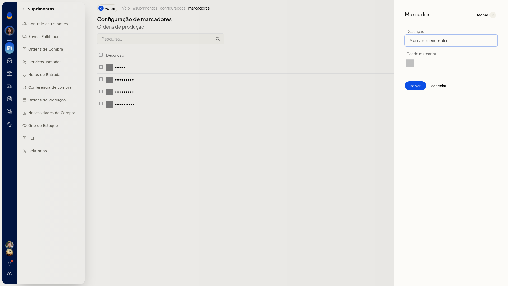

Lançar estoque da ordem de produção
No ERP da Olist, você lança o estoque de uma ordem de produção em Suprimentos > Ordens de Produção. Dá para lançar pela linha de uma ordem ou de várias ordens ao mesmo tempo. Na lista, o selo E indica Estoque lançado.
Instruções
Pela linha da ordem
-
Acesse Suprimentos > Ordens de Produção.

-
Na lista, localize a ordem.

-
Abra o menu de ações da linha.

-
Clique em Lançar estoque.
Em lote
- Acesse Suprimentos > Ordens de Produção.
- Selecione as ordens na lista.
- Clique em Lançar estoque.
Informações adicionais
Estoque das ordens filhas
Em Configurações > Configurações ERP, na lista de configurações de Suprimentos, abra Configurações de ordens de produção. A opção Lançar estoque automaticamente para as ordens filhas define se o estoque das ordens filhas é lançado automaticamente.


Se a opção não aparecer para você, peça acesso ao administrador da conta.